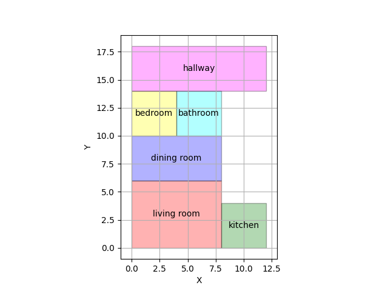
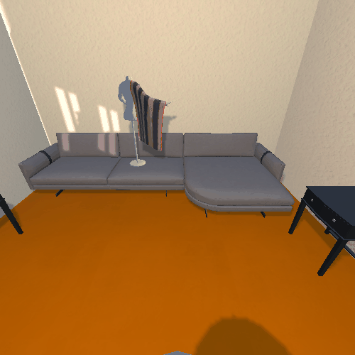

RESULTS
3D Indoor Scene Generation
A comparison of Our method and HOLODECK.
HOLODECK
OURS
Task-based Scene Generation and Position Prediction of the Haptic Glove
sample 1
sample 2
Haptic-based Human-Robot Interaction
Type: a living room
Instruction: Place a laptop on the dresser.
Top-Down
Robot
Human
Type: a living room
Instruction: Examine a credit card by the light of a floor lamp and then turn it off.
Top-Down
Robot
Human
Type: a kitchen
Instruction: Put a chilled bread on the counter.
Top-Down
Robot

Human